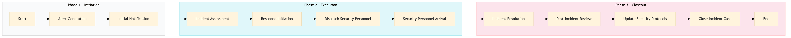

| Role | Steps |
|---|---|
| Security Manager | 1.1 1.2 2.1 2.2 3.1 3.2 3.3 3.4 |
| Security Team Lead | 2.1 2.2 2.3 2.4 |
| Security Officer | 2.3 2.4 3.1 |
| Step | Name | Role | System | Input | Output | KPI | Dec? | Exc? | Pain Point / Risk |
|---|---|---|---|---|---|---|---|---|---|
| 1.1 | Alert Generation | Security Manager | Oracle OPERA Cloud | CCTV footage analysis | Incident alert | Less than 30 seconds | N | Y | False positives leading to unnecessary alerts |
| 1.2 | Initial Notification | Security Manager | Oracle OPERA Cloud | Incident alert | Notification sent to Security Team | Less than 1 minute | N | Y | Delayed notifications causing response delays |
| 2.1 | Incident Assessment | Security Team Lead | Oracle OPERA Cloud | Notification | Assessment report | Less than 5 minutes | Y | N | Inaccurate assessment leading to improper response |
| 2.2 | Response Initiation | Security Team Lead | Oracle OPERA Cloud | Assessment report | Incident response plan | Less than 10 minutes | N | Y | Lack of clear response protocols |
| 2.3 | Dispatch Security Personnel | Security Team Lead | Oracle OPERA Cloud | Incident response plan | Dispatch order | Less than 1 minute | N | Y | Slow dispatch times |
| 2.4 | Security Personnel Arrival | Security Officer | Oracle OPERA Cloud | Dispatch order | Arrival confirmation | Less than 5 minutes | N | Y | Inefficient routing or communication |
| 3.1 | Incident Resolution | Security Officer | Oracle OPERA Cloud | Arrival confirmation | Resolution report | Less than 20 minutes | Y | N | Prolonged resolution times |
| 3.2 | Post-Incident Review | Security Manager | Oracle OPERA Cloud | Resolution report | Review document | Less than 1 hour | N | Y | Lack of thorough review leading to recurring issues |
| 3.3 | Update Security Protocols | Security Manager | Oracle OPERA Cloud | Review document | Updated protocols | Less than 1 day | N | Y | Delayed updates causing ongoing vulnerabilities |
| 3.4 | Close Incident Case | Security Manager | Oracle OPERA Cloud | Updated protocols | Closed case record | Less than 1 day | N | Y | Incomplete closure leading to ongoing concerns |
This process outlines the steps for CCTV monitoring and incident detection at a full-service Marriott hotel using Oracle OPERA Cloud PMS. The goal is to ensure real-time monitoring and swift response to any security incidents.